Order/Lager/Fakturering för Linuxsystem
Användarmanual
Kapitel Administration
Version 0.42
2007-03-12
This program is free software; you can
redistribute it and/or modify
it under the terms of the GNU
General Public License as published by
the Free Software
Foundation; either version 2 of the License, or
(at your option)
any later version.
Copyright 2004 Jan Pihlgren.
Administration. Allmännt.
Användaradministration. Ny användare. Visa användardata. Lista användare. Ta bort användare. Ändra användardata.
Funktionsadministration. Ny funktion. Lista funktioner. Lista program. Saknad funktion.
Behörighetsadministration. Ny behörighet. Fullständig behörighet.
Betalningsvillkor. Nytt betalningsvillkor. Lista befintliga betalningsvillkor. Ändra betalningsvillkor. Radera ett betalningsvillkor.
Att använda ett ekonomisystem lär man sig inte på en dag. Det är många saker man måste ha kännedom om.
Bland annat behöver man lära sig metoder för backup och "köra" uppdaterings och rensningsprogram regelbundet.
OLFIX har ett eget behörighetssystem ovanpå operativsystemet (Linux). Behörighetssystemet kan hanteras av personer som inte är speciellt utbildade på operativsystemet. En användare med kunskaper om företagets affärsfilosofi och regler för spridning av företagets information kan enkelt handera OLFIXs behörighetssystem.
Behörighetssytemet bygger på att varje användare av OLFIX finns registrerad med sitt ordinarie loggin-ID (operativsystemets loggin-ID) samt en förteckning över vilka programmoduler vederbörande har rätt (behörighet) att använda.
För att kunna använda OLFIX krävs att en användare finns registrerad i respektive databas.
Användaren måste dessutom finnas upplagd som användare i operativsystemet.
Lägga upp den nya användaren med ADDUSRW.
Administration - Användaradministration - Ny användare.
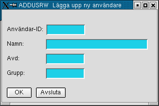
Användar_ID: Ange användarens inloggnings-ID. OBS! Maximalt 20 tecken.
De övriga tre fälten är bara information.
Namn: Fyll i användarens verkliga namn.
Avd: Ange var i organisationen användaren arbetar, t ex Ekonomi, Produktion
Grupp: Ange vilken över- eller undergrupp användaren tillhör.
OBS! Programmet ändrar automatiskt till versaler vilket är OK.
Använd DSPUSRW för att se vilka behörigheter en användare erhållit.
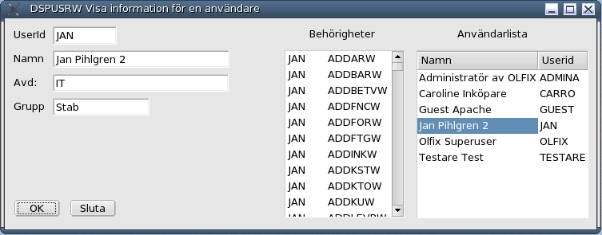
Man kan antingen skriva in Userid direkt eller så kan man klicka på önskat namn i Användarlista. Avsluta med Enter eller TAB
Använd LSTUSRW för att se vilka användare som finns registrerade.
Användare OLFIX är väsentlig för möjligheten att kunna lägga upp behörigheter i systemet. I övrigt bör åtminstone en egen användare finnas registrerad.
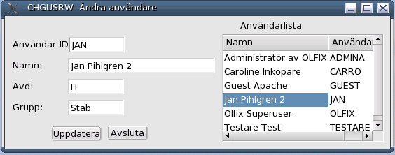
Genom att klicka på önskad användare i Användarlista kopieras användarens userid till fältet Användar-ID.
Man kan även skriva in vederbörandes userid direkt.
När man sedan flyttar sig från fältet (med TAB eller Enter) så hämtas användarens aktuella data och skrivs in i respektive fält.
Därefter kan man ändra de data man önskar.När man är klar med ändringarna så klickar man på knappen Uppdatera. Databasen uppdateras, fälten blankas ut och Användarlistan uppdateras.
För att ta bort en användare, med samtliga dennes rättigheter ur systemet använd DELUSRW.
Varning! Användaren OLFIX får absolut inte tagas bort! Vare sig som användare eller behörigheterna.
Behörighetssystemet är till för att selektera behörighet till olika delar av OLFIX.
Det medger att någon annan än den som administrerar datorsystemet att organisera och tilldela behörigheter till OLFIX:s databaser. Behörigheterna gäller respektive databas.
Behörighet i t ex olfix medger inte per automatik behörighet i olfixtst och vise versa.
För att kunna använda ett program eller en funktion behövs en koppling mellan användaren och programmet.
I den Tekniska Manualen anges till vilka funktioner behörighet erfordras för respektive program.
Tilldelning av behörighet görs med programmet ADDRGTW.
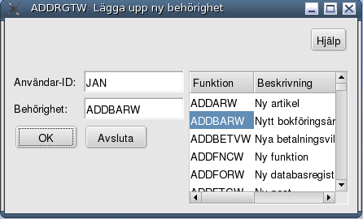
Skriv in Användar-ID och tryck på Enter. Användar-ID ska var det samma som det user-ID som används vid inloggning till Linux. Max 8 tecken.
Programmet TOTRGTW kan användas för att ge en användare behörighet att använda alla program i OLFIX.
Undantaget är att det ger inte tillgång till sig själv (TOTRGTW, ADDTOT), den behörigheten måste läggas upp manuellt med ADDRGTW av en administratör. Vederbörande får ej heller behörighet till ADDRGTW och kan följdaktligen inte själv ge sig denna behörighet.
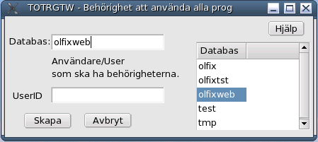
OBS! Programmet skall användas i den databas där behörigheterna ska tilldelas.
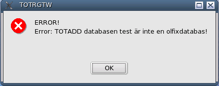
Funktionsadministration innebär upplägg av nya funktioner med tillhörande beskrivningar.
Registrera nya funktioner.
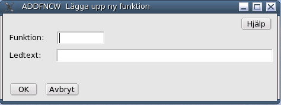
Skriv in namnet på den nya funktionen i fältet Funktion. Avsluta med att trycka Enter.
Lista befintliga funktioner.
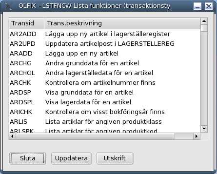
En funktion är en koppling mellan ett program och databasen. Att särskilja funktionen från programmet underlättar möjligheten att hantera behörigheter för användare.
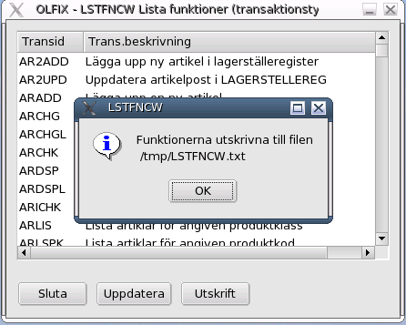
Som framgår av bilden sparas en fil i mappen/directory /tmp, /tmp/LSTFNCW.txt.
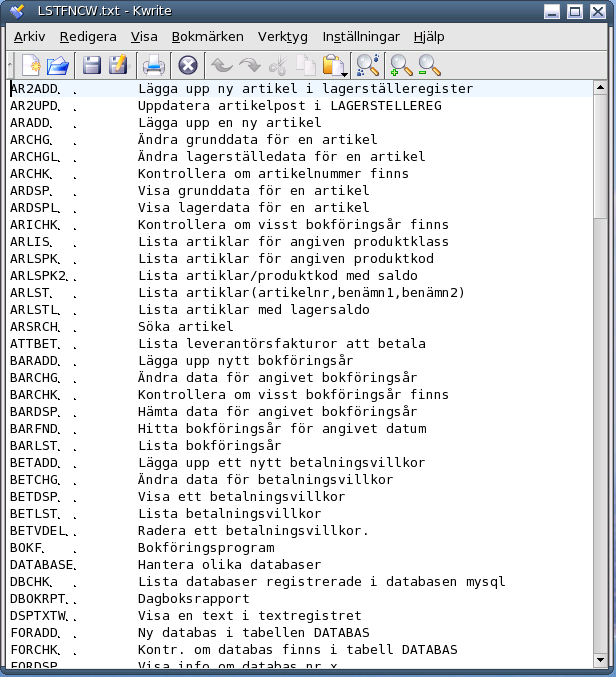
Lista befintliga program (moduler).
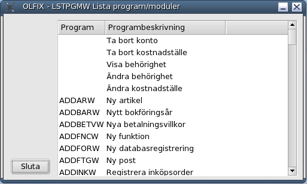
Genom att klicka på ett kolumnamnen får man sortering efter kolummen. Ett klick till på samma kolumn ger omvänd sortering.
I detta fall betalningsvillor förregistrerade villkor som sedan kan användas när man registrerar en kundorder för att minska behovet av att varje gång behöva skriva in betalningsvillkoren i kundordern.
Nyupplägg av betalningsvillkor.
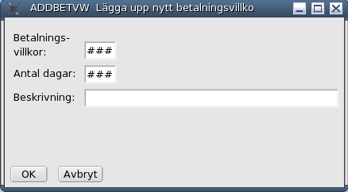
I fältet Betalningsvillkor, fyll i ett referensnr/löpnr för betalningsvillkoret. Fältet ska innehålla 3 tecken. Vid behov lägg in inledande nollor.
Lista befintliga betalningsvillkor.
Listan är en förteckning över registrerade betalningsvillkor
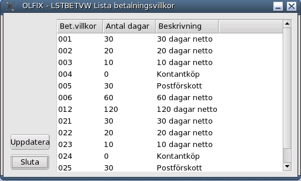
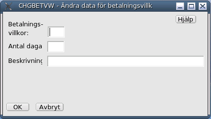
Det är fälten Antal dagar och Beskrivning som kan ändras.
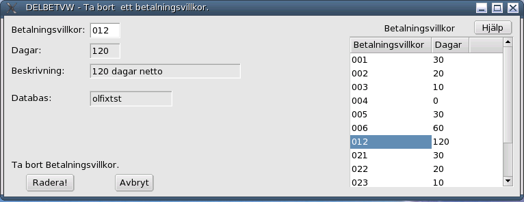
Klicka på önskat betalningsvillkor i tabellen till höger så hämtas data till fälten Betalningsvillkor, Antal dagar och Beskrivning.
Bokföringsår: Tvåställig bokstavskombination som anger vilket
bokföringsår/redovisningsår som avses.
Administration - Användaradministration - Visa en användare.
Administration - Användaradministration - Lista användare.

Knappen Uppdatera är till för att läsa in data igen.
Administration - Användaradministration - Ta bort användare.

Userid: Ange användarens inloggnings-ID. Avsluta med att trycka på Enter eller TAB.
Allternativt kan man klicka på önskad Userid i tabellen Användare till höger.
Nu kan man radera användaren samt alla rättigheter för denne genom att klicka på knappen Radera!.
I fall man ångrar sig kan man klicka på knappen Avbryt och programmet avbryts utan att någon radering sker.
Även när man är klar med att ta bort användare klickar man på knappen Avbryt.
Fältet Databas är information ur i vilken databas användaren kommer att raderas.
Databasen olfixtst levereras med fullständ behörighet (till alla program) för den som installerat OLFIX.
Se även Total Behörighet.
När det gäller databasen olfix (den skarpa databasen) så får du själv lägga upp de rättigheter du behöver, en och en.
Administration - Behörighetsadministration - Ny behörighet.
Fyll sedan i önskad behörighet och tryck på Enter.
Allternativt kan man klicka på önskad funktion i tabellen till höger. Glöm inte att trycka på Enter.
Klicka sedan på OK-knappen för att registrera.
Upprepa förfarandet för varje önskad behörighet.
Detta måste även göras för de program användaren ska ha behörighet att använda.
Lämna ADDRGTW genom att klicka på knappen Avsluta.
Genom att klicka på en av databaserna som finns i listan kopieras denna till fältet Databas. Programmet kontrollerar att man valt en olfixdatabas. I fall man angett en databas som inte är en olfixdatabas erhålls nedanstående felmeddelande.
Om fältet lämnas blankt uppdateras den databas man befinner sig i (olfixdatabas).
UserID kan anges med gemener eller versaler. Programmet ställer om UserID till versaler.
I fall man anger en databas som inte är en olfixdatabas erhålls följande felmeddelande;
En funktion är ett program (C-program) som utgör en brygga mellan det grafiska programmet och databasen.
Nya funktioner läggs upp när det tillkommit ny funktionalitet i OLFIX.
I samband med uppgradering av OLFIX kan det hända att en ny funktion rapporteras som saknad, se
Saknad funktion. och Ny funktion.
Programmet är till för att underlätta sammankoppling av nya program och databasen.
I fältet Ledtext skriver man in text som förklarar vad funktionen gör. Avsluta med att trycka på Enter.
Det finns också möjlighet att få en utskrift av befintliga funktioner genom att klicka på Utskrift.
Blanka fält i kolumnen Program innebär att det ännu inte finns program för detta ändamål.
Betalningsvillkoren kan även registreras på en kunds kunddata. Vilket även de minskar behovet att komma ihåg vad som gäller för en viss kund.
Betalningsvillkoret används som referens till den beskrivande texten. Referensen används sedan vid registrering av en kund samt kondorderregistrering.
I fältet Antal dagar anges hur många dagar netto/brutto som betalningsvillkoret gäller.
I de fall det gäller kontant betalning anges 0 (noll) dagar. Fältet ska innehålla 3 tecken. Vid behov lägg in inledande nollor.
Vid postförskott och liknande ange det maximala antal dagar ett paket/gods får/kan bli liggande på post/godscentral innan det löses ut.
Informationen i fältet används för att beräkna förfallodagen av en faktura.
I fältet Beskrivning skrivs den text som sedan kommer att skrivas ut på ordererkännande och faktura.
Texten bör vara t ex: 30 dagar netto.
Ange numret för det betalningsvillkor som behöver ändra. Avsluta med Enter.
Genomför önskade ändringar.
Klicka sedan på knappen OK för att uppdatera.
Innehållet i fälten Antal dagar och Beskrivning visas bara som information.
Fältet Databas talar om i vilken databas/vilket företag som betalningsvillkoret plockas bort.
Genom att klicka på knappen Radera så plockas betalningsvillkoret bort ur registret.
Funktion: Ett mindre program som sammanbinder huvudprogram med databasen.
Behörighet: Möjlighet att använda ett program i OLFIX.